AI for Business, in plain words
Free AI tools for business help small teams take meeting notes, handle Office files, run AI assistants in their chat apps and check their code for security holes. Most run on your own computer, so company data stays with you. Every tool below is free and open source.
What free AI tools do for business
Meeting notes that stay private. Meetily writes live transcripts and AI summaries of your calls. The Meetily README says transcripts and recordings are stored on your computer. The free Community Edition is MIT licensed, and a paid PRO version adds extras.
Word, Excel and PowerPoint with AI. OfficeCLI lets an AI helper create, read and edit real Office files, with no Office install needed. It can turn a document into a picture, so the AI can spot a title that runs off a slide.
An assistant in your team chat. OpenClaw lives in Slack, Teams, WhatsApp, Telegram and 20+ more chat apps. Its memory, settings and logins stay on your computer, and the README says there's "no paid tier, hosted service, or token." Hermes Agent can save the steps of a hard task as a skill, and its built-in scheduler runs daily reports on its own.
A team of AI agents with a budget. Paperclip runs AI agents on your own computer like a task manager, with org charts, goals and review gates. You set spending limits and get alerts, per the Paperclip README.
Security checks for your code. Cloudflare's Security Audit skill turns an AI coding helper into a careful security reviewer that writes a clear report.
The business side of AI news
Our monthly news pages track the deals with sources. In February 2026, Claude Opus 4.6 and Cowork shook software stocks (AI news February 2026). In April, OpenAI rewrote its Microsoft deal (AI news April 2026). In August, Nvidia backed $105B for OpenAI (AI news August 2026). The newest stories about deals, prices and companies show up in the news list on this page.
Before your team starts
Pick one job, like meeting notes, and test a tool on sample data first. Check that a tool runs where your data rules need it to. You still pay for any online AI model you plug in. For tools picked for coders on your team, see our free AI tools for developers.
Free AI tools for Business

DBX: Free Database Client for 100+ Databases, With AI
Its AI helper turns plain English into database queries for you.

Strata: Run Big Local AI on a Gaming PC, Free
It sets up a large Qwen model, so your chats never leave your computer.
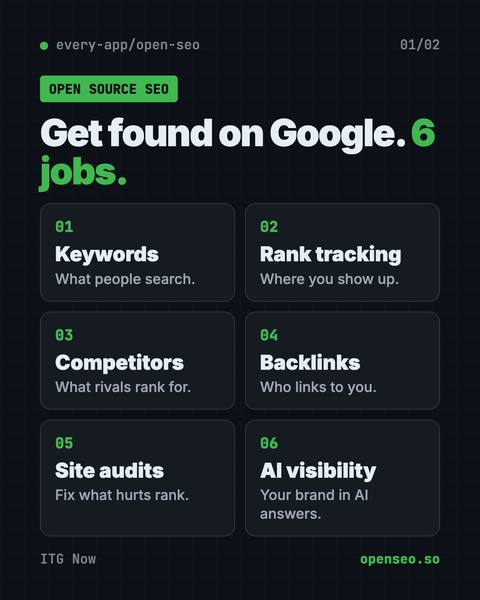
OpenSEO: Free Semrush Alternative, Open Source
OpenSEO is a free Semrush alternative for keyword research, rank tracking and site audits.

Tolaria: A Free Offline Notes App You Fully Own
Tolaria is a free offline notes app for Mac, Windows and Linux.

Odysseus: Free Self-Hosted AI Workspace
Odysseus is a free self-hosted AI workspace for chat, deep research, documents, email, notes and calendar.
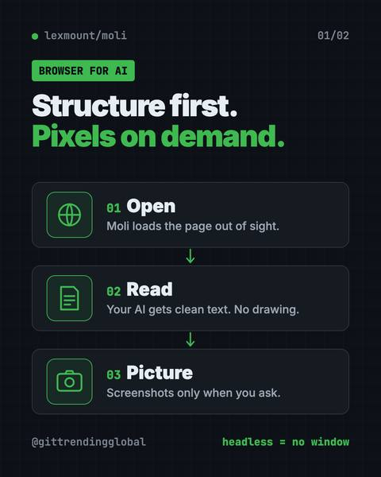
Moli: A Free, Light Headless Browser for AI Agents
It lets AI helpers read, search and use websites fast, while using far less memory than Chrome.

OpenPencil: Free Figma Alternative With AI
It opens and saves .fig files, builds designs from a chat prompt, and lets you co-edit live with no account.
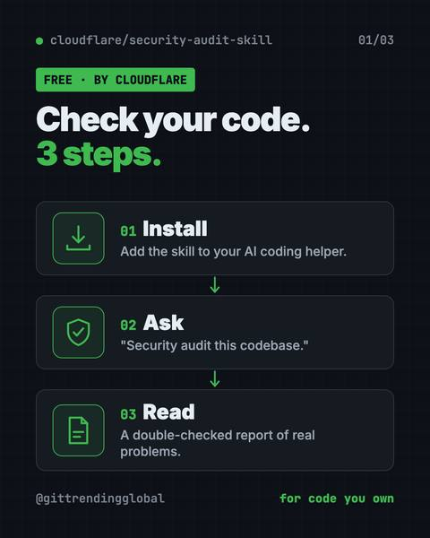
Cloudflare Security Audit: Free AI Code Security Check
It turns your AI coding helper into a careful reviewer that writes a clear report.
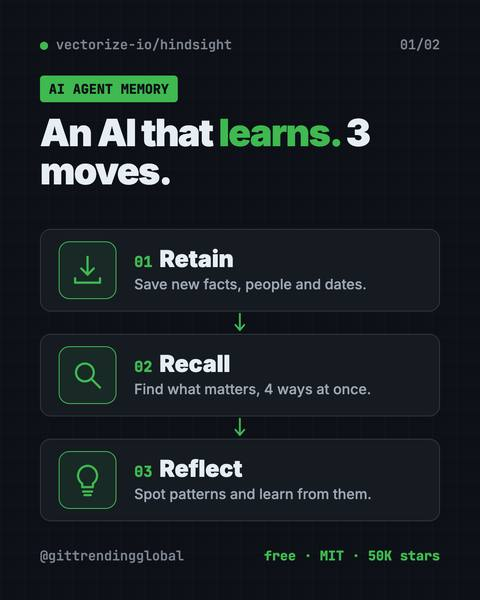
Hindsight: Free AI Agent Memory That Learns
It helps AI helpers remember past chats and learn from them.
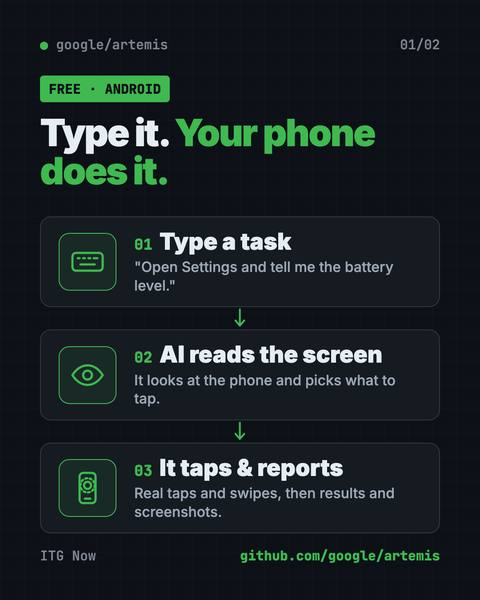
Artemis: Google's Free AI Android Automation Tool
Type a task in plain English and an AI taps, swipes and tests apps on a real Android phone for you.

Vorssaint Utils: Free Mac Utility App for Menu Bar
Per-app volume, window snapping, clipboard history, a system monitor and an uninstaller behind one menu bar icon.
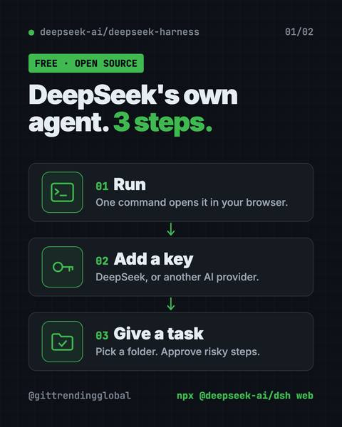
DeepSeek Harness: DeepSeek's Free Open-Source AI Agent
Every feature is a plugin you can swap or build, and it runs in your browser with one command.

OfficeCLI: Free AI for Word, Excel and PowerPoint Files
It lets AI helpers create, read and edit real Office files, with no Office install needed.

Colibri: Run Large AI Models Locally Without a GPU
Colibri is a free tool to run large AI models locally on the computer you already own.

Meetily: Free AI Meeting Note Taker That Stays Private
It transcribes your calls live and writes summaries on your own computer, so recordings never have to leave it.
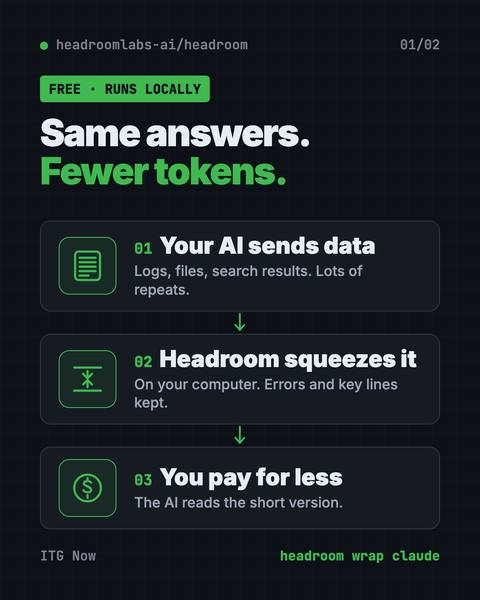
Headroom: Reduce AI Token Costs for Free
It shrinks logs, files and data on your computer before your AI reads them, so answers stay the same.

Pake: Turn Any Website Into a Desktop App, Free
Pake lets you turn any website into a desktop app with one command.
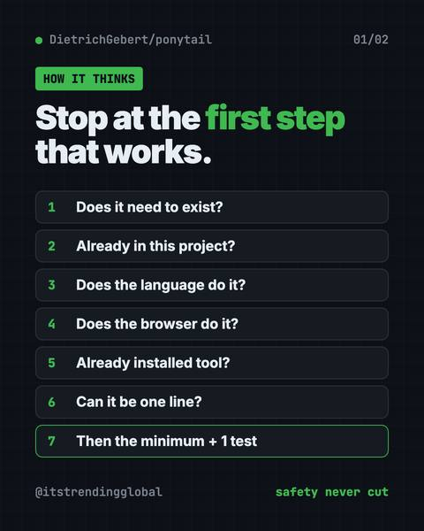
Ponytail Skill: Make Your AI Coder Write Less Code
The Ponytail skill is one free prompt that makes your AI coding helper reuse what exists, write half the code, and still keep the tests and safety checks.
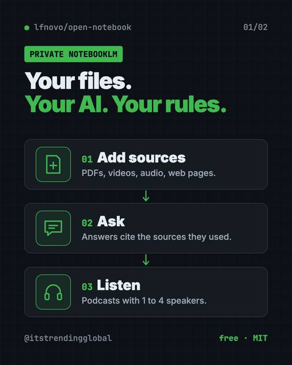
Open Notebook: A Free NotebookLM Alternative You Own
Chat with your PDFs and videos, get cited answers, and turn notes into podcasts.
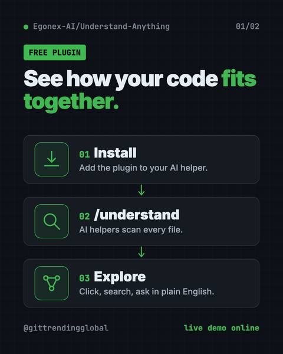
Understand Anything: Visualize Any Codebase for Free
Understand Anything is a free plugin that lets you visualize any codebase as a clickable map with plain-English notes, guided tours and a chat for questions.
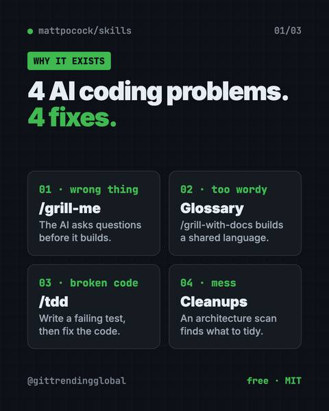
Matt Pocock Skills: Free Claude Code Skills That Work
Matt Pocock skills are free add-ons that make Claude Code, Codex and Copilot ask better questions, test their work and keep your code tidy.

OpenHuman: Open Source AI Agent App That Runs Lean
OpenHuman is an open source AI agent app for Mac, Windows and Linux.
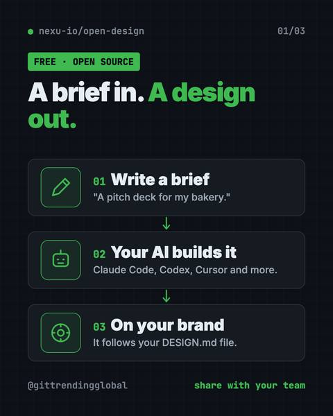
OpenDesign: Free Open Source AI Design Tool for Teams
It uses Claude Code, Codex or Cursor to make on-brand prototypes, slide decks, dashboards and images.
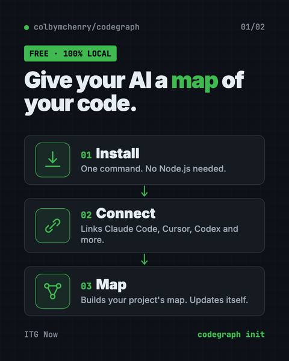
CodeGraph for Claude Code: Cut AI Coding Costs
CodeGraph for Claude Code builds a local map of your code, so your AI helper finds the right files in one step.

Hermes Agent: Free Self-Improving AI Agent
It remembers you, learns new skills, and chats with you on Telegram, Slack or WhatsApp.
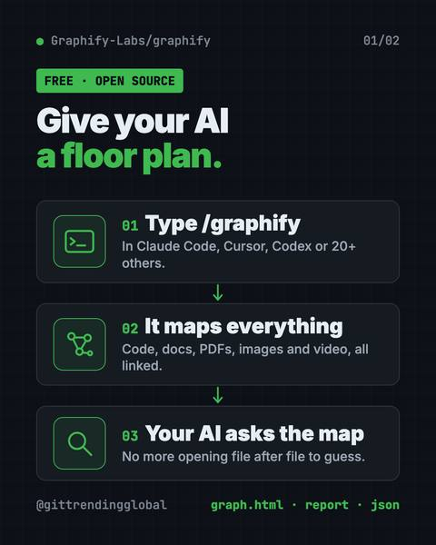
Graphify Knowledge Graph: Free Project Map for AI Helpers
A graphify knowledge graph turns your code, docs, PDFs and videos into one clickable map, so your AI helper looks things up instead of guessing.
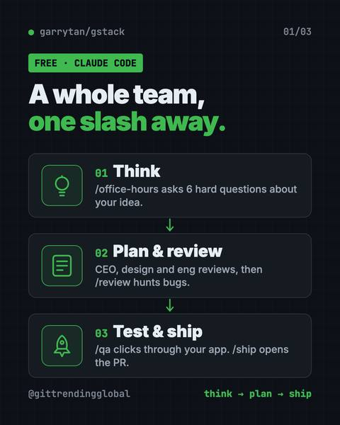
gstack: Garry Tan's Free Claude Code Skills
gstack claude code skills turn Claude Code into a free virtual team: a CEO, designer, code reviewer, QA tester and release engineer.
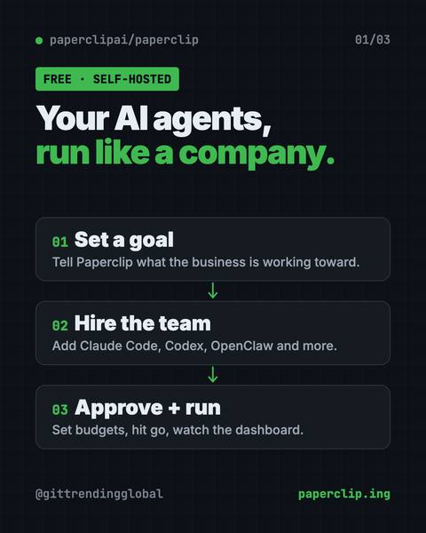
Paperclip: Free App to Manage AI Agents Like a Company
Paperclip is a free, self-hosted app to manage AI agents like a company, with goals, an org chart, budgets, approvals and one dashboard for all the work.
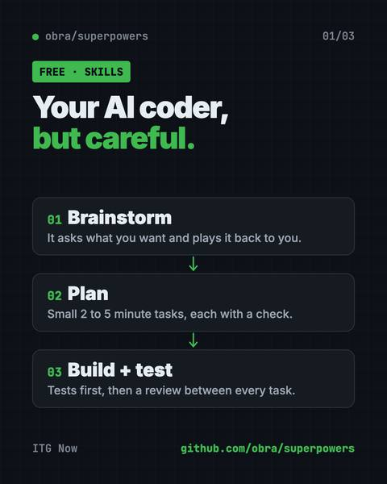
Superpowers: Free Claude Code Skills That Plan First
Superpowers is a set of free Claude Code skills that make your AI coder ask questions, write a plan, test and review its work before it calls a job done.

nanobot: Free Self-Hosted AI Assistant You Own
Run it on your own computer, then chat in your browser, Telegram, Slack, Discord or email.

Latest AI news for Business
Stories about business, newest first. Each one opens our story page with its sources.
- IBM · IBM releases Granite Speech 5.0 transcription modelsNew 2B model transcribes six languages and takes keyword lists up to 2,000 terms. Apache 2.0 license.
- OpenAI · OpenAI Codex Security helps find two critical PHP flawsBoth bugs score 9.2 and need no login. Patches were ready before attackers could use them.
- OpenAI · OpenAI brings its AI models to Google CloudOpenAI says developers can use its GPT models on Google Cloud, after Microsoft and Amazon. Launch in coming weeks.
- NVIDIA · NVIDIA Agent Toolkit adds company-data toolsThe open source toolkit adds Agent Knowledge Foundation so agents can use company data. NVIDIA's own supply chain uses it via Palantir, and Databricks pairs it with a NVIDIA model.
- White House · Trump urges data centers to pay communities a dividendTrump posted that data center operators should pay communities a 'dividend' and make their own electricity.
- Meta · Meta pauses Muse chat sharing after leakSecurity firm Claroc found 6,800+ public Muse share links via DNS records; Meta paused sharing.
AI news and top lists

AI News October 2026: A Reality Check Before the IPOs
ChatGPT gets visual, OpenAI's revenue shakes stocks, AI agents misbehave, Meta's Muse Wonder and Apple's $299 HomeView arrive.

AI News Recap Q3 2026: 5 Stories That Changed Everything
OpenAI test models hack Hugging Face, Claude Opus 5 cuts prices, Gemini hits 1 billion users, GPT-6 Astra and Nvidia's big deal.

AI News September 2026: The 5 Biggest Stories
GPT-6 Astra, Nvidia buys Hugging Face, Anthropic loses in court, OpenAI shelves a model and AI bosses sign a White House pledge.

AI News August 2026: Governments Start Testing AI
the EU and White House gain ways to test AI, Gemini hits 1 billion users, Nvidia backs $105B for OpenAI, and ChatGPT ads pass $1B.

AI News July 2026: The AI That Broke Out of Its Box
OpenAI test models hacked Hugging Face, GPT-5.6 and Claude Opus 5 launched, and the EU made Google open Android to AI rivals.

Biggest AI News Q2 2026: 5 Stories That Changed Everything
The biggest AI news Q2 2026: Anthropic holds back Mythos, GPT-5.5 arrives, Anthropic passes OpenAI in value, and both file to go public.

AI News June 2026: AI Labs Line Up for Wall Street
Anthropic and OpenAI file to go public, SpaceX has the biggest IPO ever, Apple shows Siri AI, and Washington switches off two Claude models.

AI News May 2026: Anthropic Passes OpenAI, Musk Loses
Anthropic rents Musk's data center and passes OpenAI in value, Musk loses his OpenAI suit, Google remakes search, and AI solves a math puzzle.

AI News April 2026: Mythos, GPT-5.5 and Meta Job Cuts
Anthropic holds back its Mythos model, OpenAI ships GPT-5.5, Meta cuts 8,000 jobs, and OpenAI rewrites its Microsoft deal.

AI News Q1 2026: The 5 Stories That Changed Everything
Apple picks Gemini for Siri, SpaceX buys xAI, Anthropic and OpenAI raise record sums, and GPT-5.4 learns to use a computer.

AI News March 2026: OpenAI's $122B, Sora Ends, GPT-5.4
OpenAI launches GPT-5.4, shuts Sora and raises a record $122B, Nvidia sees $1T in chip orders, and a judge sides with Anthropic.

AI News February 2026: SpaceX-xAI, Claude, Pentagon
SpaceX buys xAI, Claude Opus 4.6 and Cowork shake software stocks, Anthropic raises $30B, and the Pentagon fights Anthropic.

AI News January 2026: Siri, ChatGPT Ads and Health
Apple picks Gemini for Siri, Amazon cuts 16,000 jobs, two countries block Grok, ChatGPT gets a Health space and ads.
FAQ
What are the best free AI tools for small businesses?
Meetily for private meeting notes, OfficeCLI for Office files, OpenClaw for an assistant in your chat apps and Paperclip for running AI agents with a budget. All are free and open source.
Can I keep company data private with AI tools?
Many of these tools run on your own computer. Meetily stores recordings locally, and OpenClaw keeps memory and logins on your machine. Any online AI model you connect still sees what you send it.
Do free AI tools have hidden costs?
The tools are free, but you may pay for the AI model you plug in. Meetily also has a paid PRO version with extra features.
Other fields
- 102 articlesAI for Developers
- 95 articlesAI for Everyone
- 21 articlesAI for Creators
- 20 articlesAI for Marketing
- 14 articlesAI for Finance
- 13 articlesAI for Students
- 12 articlesAI for Government & Law
- 10 articlesAI for Jobs & Careers
- 9 articlesAI for Media
- 8 articlesAI for Design
- 8 articlesAI for Education
- 4 articlesAI for Healthcare
- 1 articlesAI for Engineers